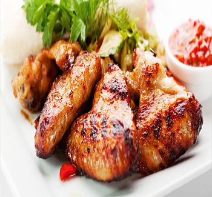

Bahan:
- 1 ekor ayam, bagi menjadi 8 atau 10 bagian
- 200 ml santan dari 1/2 butir kelapa
- 1 sdt air jeruk nipis
- 4 lembar daun jeruk
- 4 sdm kecap manis
- 350 ml air bersih
- 1/2 sdm garam
Bumbu Halus:
- 8 butir bawang merah
- 3 siung bawang putih
- 2 buah cabai merah
- 1 buah merica
- 1 sdt ketumbar yang sudah disangrai
- 2 cm jahe
Cara Membuat:
- Tumis bumbu halus dan daun jeruk hingga harum, aduk-aduk.
- Masukkan ayam, aduk-aduk hingga tercampur rata dan ayam berubah warna.
- Tuang kecap manis dan air jeruk nipis. Aduk hingga rata.
- Tuang santan, kemudian masukkan garam. Tunggu hingga santan mendidih dan menyusut. Angkat..
- Bakar ayam di atas bara api. Bolak balik agar tidak gosong. Sesekali olesi dengan sisa bumbu..
- Sajikan selagi hangat bersama nasi, sambal dan lalapan..